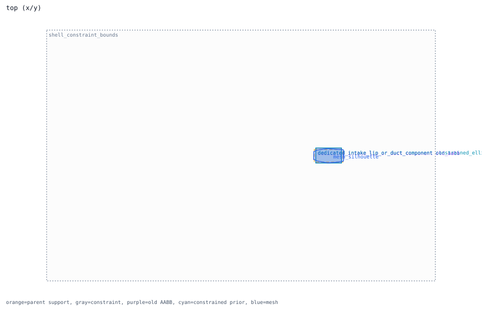
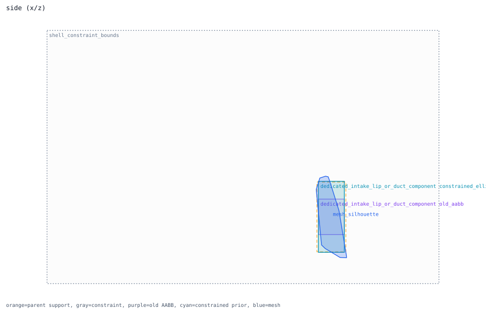
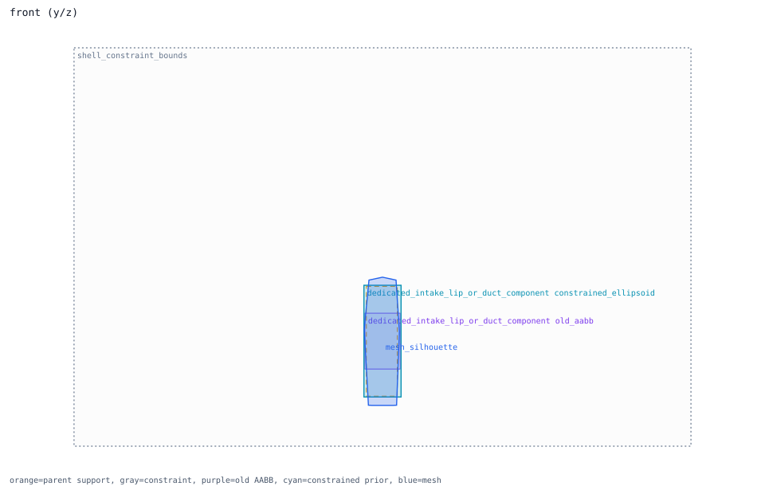

dedicated_intake_lip_or_duct_component
ellipsoid prior -> intake; constraint status already_inside_whole_airframe
Trace Details
- component: dedicated_intake_lip_or_duct_component
- system: engine
- role: duct_receiver
- prior shape: ellipsoid axis=none
- bound region: intake
- constraint regions: intake
- constraint mode: single_parent_placement_source_region_bounds_whole_airframe_constraint
- constraint status: already_inside_whole_airframe
- old AABB containment: 1.0
- adjustment: {"airframe_projection_center_shift_m": 0.0, "center_shift_m": 0.0, "placement_outside_fraction": 0.0, "post_constraint_outside_fraction": 0.0, "pre_constraint_outside_fraction": 0.0, "required_fit_scale": 1.0, "shrink_scale": 1.0, "size_preserved": true, "size_shrink_allowed": false}
- component review semantics: candidate_direct_region_binding
- rationale: intake duct receiver follows the measured semantic intake region because public F-16 duct dimensions are not available here.
- runtime projection: runtime_schema_candidate_not_activated_prior_shape_review_required


